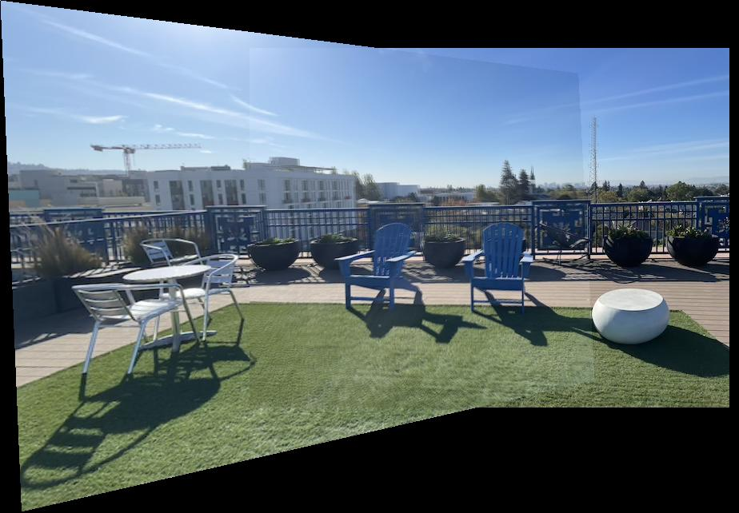
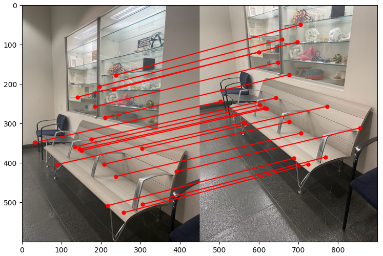
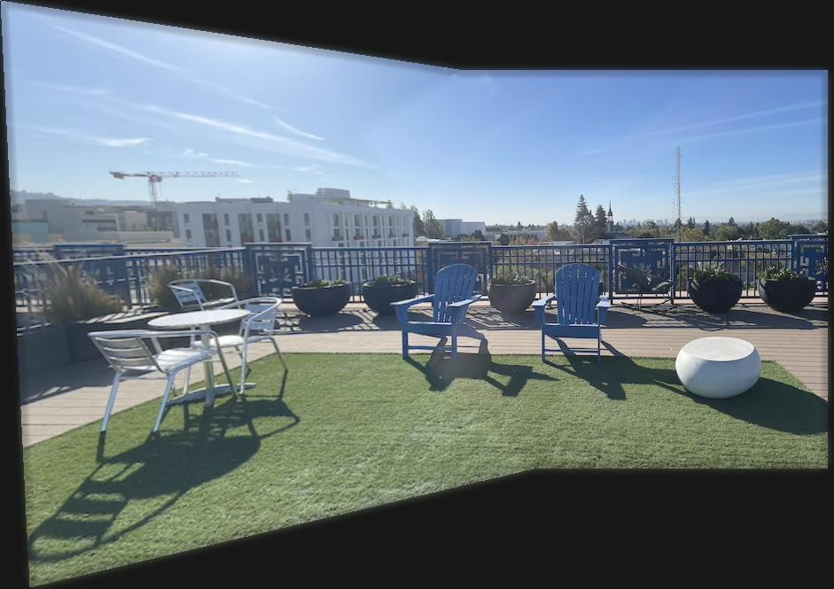

To start, correspondences are labeled among the pictures taken. In order to warp an image to align with its
reference image, homography H (defining transformation p'=Hp) is recovered. This step is implemented in
the function H = computeH(im1_pts, im2_pts). To ensure the stability of H, more than 4
correspondences are used to produce an overdetermined system, which is solved with least squares.
Porch (Left)
Porch (Right)
Hallway (Left)
Hallway (Right)
Shelf (Top)
Shelf (Bottom)
Warp the Images
Next warpImage(im, H) leverages the recovered homography H to perform inverse warping. The
size, or bounding box, of the warped image is predicted by piping the 4 corners of the original image
through H. Then, the bounding box is inverse warped onto the original image, where an alpha mask drops
"invalid" (x,y)'s outside of the original image's dimensions. Finally, this warped image's values are
resampled with scipy's RegularGridInterpolator.
Image Rectification
To test the above functions, "rectification" is performed on two example images. In both cases, the post-it
note is "made rectangular" using a homography.
Original Image
Rectification
Cropped
Original Image
Rectification
Cropped
Blend the images into a mosaic
The images are warped to create an image mosaic. Specifically, the image on the left is warped
in reference to the image on the right, which is positioned accordingly.
Porch (Left, Warped)
Porch (Right, Positioned)
Hallway (Left, Warped)
Hallway (Right, Positioned)
Shelf (Top, Warped)
Shelf (Bottom, Positioned)
The images need to be blended together into a single image. A naive approach involves setting alpha to 0.5
in the overlapping region:

Porch
Hallway
Shelf
A second approach involves the distance transform, where alpha is 1 at the center of the original images,
then decreases to 0 at their edges. In the overlapping region, the left image's alpha is set to 1 if
its distance transform is greater than the right image's distance transform, and vice versa.
Left Porch's bwdist
Right Porch's bwdist
Left Hallway's bwdist
Right Hallway's bwdist
Top Shelf's bwdist
Bottom Shelf's bwdist
Moreover, the 2-band blending technique (with a 2-level image pyramid) can remedy wedge-like
artifacts:
Porch Results...
Low Frequency BlendHigh Frequency Blend
Hallway Results...
Low Frequency BlendHigh Frequency Blend
Shelf Results...
Low Frequency BlendHigh Frequency Blend
Part B: Feature Matching for Autostitching
Harris Interest Point Detector
The first step of autostitching is finding corners in the images. Harris corners are computed and then
thresholded. The images below are overlaid with their respective Harris corners.
Porch (Left)
Porch (Right)
Hallway (Left)
Hallway (Right)
Shelf (Top)
Shelf (Bottom)
Adaptive Non-Maximal Suppression
Adaptive non-maximal suppression is used to select 200 interest points from the Harris corners. This method
sorts the corners by non-maximal suppression radius and retrieves 200 corresponding to the largest radii,
ensuring that the interest points are well-distributed across the images.
Porch (Left)
Porch (Right)
Hallway (Left)
Hallway (Right)
Shelf (Top)
Shelf (Bottom)
Feature Descriptor Extraction
For each feature point, a feature descriptor is extracted. More specifically, a 40x40 patch is created
around each feature point, and an 8x8 patch is sampled with a spacing of s=5 pixels. Finally, the feature
descriptors are bias/gain-normalized. For each image below, the 200 feature descriptors are shown in a 10x20
grid.
Porch (Left)
Porch (Right)
Hallway (Left)
Hallway (Right)
Shelf (Top)
Shelf (Bottom)
Feature Matching
Feature descriptors are matched across images in a mosaic. Using scipy.spatial's
KDTree, a match is recorded if:
The nearest neighbor of one image is also the nearest neighbor of the other(s)
As proposed by Lowe, the ratio of the first to second nearest neighbor's square error is below a
threshold
Porch (# Matches: 16)
Hallway (# Matches: 28)
Shelf (# Matches: 36)
RANSAC
Given feature matches, 4-point RANSAC is used to compute a robust homography estimate. The algorithm is
described in the following steps:
Select four feature pairs at random
Compute exact homography H
Compute inliers where dist(p', Hp)
< error
Repeat steps 1-3 for k iterations
Keep largest set of inliers
Recompute least squares H estimate on all inliers
Porch (Size of largest inlier set: 9)
Hallway (Size of largest inlier set: 19)

Shelf (Size of largest inlier set: 19)
Results
Finally, Part A (image warping and blending) is repeated to produce mosaics. The manually and automatically
stitched results from both parts are displayed side by side for comparison. For the most part, the
automatically stitched results look just as if not better aligned than the manually stitched results.
Porch (Manual)

Porch (Automatic)
Hallway (Manual)
Hallway (Automatic)
Shelf (Manual)
Shelf (Automatic)
The coolest thing that I learned from this project was RANSAC. By testing a handful of random
samples, a comparable homography can be computed automatically and in a time-efficient manner.